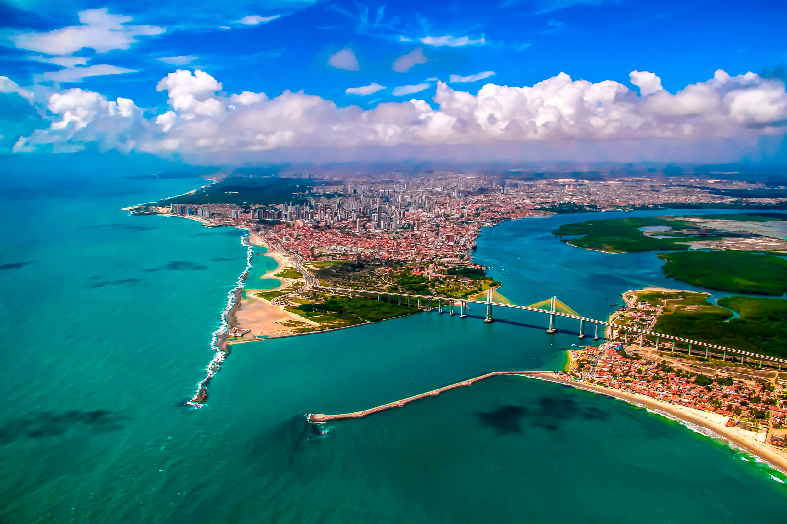
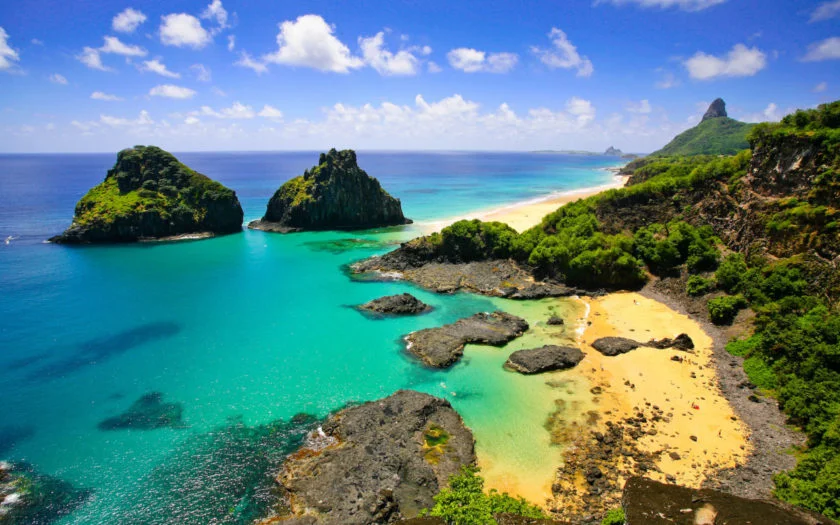

Natal
Natal, a capital do Rio Grande do Norte, é um dos destinos turísticos mais procurados do Brasil devido à sua combinação de belezas naturais, rica história e infraestrutura de turismo de alta qualidade. Conhecida como "Cidade do Sol", devido ao seu clima tropical e ensolarado durante o ano inteiro, Natal oferece praias paradisíacas com águas claras e mornas, além de ser um importante polo cultural e histórico. A cidade também é famosa pela sua proximidade com grandes atrações naturais, como o Parque Nacional de Jericoacoara, e monumentos históricos, como o Forte dos Reis Magos.
Com uma excelente oferta de restaurantes, lojas de artesanato e atividades de lazer, Natal é uma excelente opção tanto para quem busca descanso quanto para aqueles que desejam explorar a cultura e as tradições do Nordeste.
Principais pontos turísticos
- Praia de Ponta Negra e o Morro do Careca
- Forte dos Reis Magos
- Parque Nacional de Genipabu
- Ilha de Fernando de Noronha (acessível a partir de Natal) 
- Centro Histórico e Igreja de São Gonçalo do Amarante
- Praia de Genipabu
- Parque das Dunas
A Praia de Ponta Negra é a mais famosa de Natal, localizada ao pé do Morro do Careca, um imenso morro de areia que se tornou o cartão-postal da cidade. A praia é muito procurada por turistas para banhos de mar, esportes aquáticos e caminhadas à beira-mar. Ao longo da orla, existem diversos bares, restaurantes e quiosques que oferecem a culinária local e uma vista maravilhosa do mar.
O Forte dos Reis Magos é um importante marco histórico de Natal, construído em 1598 pelos portugueses. O forte, localizado na foz do Rio Potengi, tem grande importância para a história da cidade e é uma das atrações turísticas mais visitadas. Além de sua relevância histórica, o local oferece uma vista deslumbrante da cidade e do mar.

O Parque Nacional de Genipabu é uma das mais famosas atrações naturais de Natal, conhecido por suas dunas móveis e pelas belas lagoas. A área é ideal para quem gosta de aventuras, com atividades como o passeio de dromedário nas dunas e o esquibunda. Genipabu também é famosa pelas suas paisagens deslumbrantes e pela tranquilidade de suas águas.
Embora Fernando de Noronha esteja mais distante, muitas pessoas acessam a ilha partindo de Natal. O arquipélago é um dos destinos mais cobiçados do Brasil e é conhecido por suas praias de águas cristalinas, biodiversidade marinha e cenários naturais de tirar o fôlego. A viagem de Natal até Fernando de Noronha é bastante popular entre os turistas que visitam a cidade.
O Centro Histórico de Natal é um passeio obrigatório para quem deseja conhecer a história da cidade. O Palácio Felipe Camarão, o Museu Câmara Cascudo e a Igreja de São Gonçalo do Amarante estão localizados nesse centro e fazem parte do patrimônio histórico da cidade. A igreja, uma das mais antigas de Natal, foi construída no século XVIII e é um importante exemplo de arquitetura colonial.

Localizada a cerca de 20 km de Natal, a Praia de Genipabu é famosa por suas imponentes dunas, lagoas e vegetação exuberante. É um lugar perfeito para passeios de buggy, que levam os turistas para explorar as dunas e as lagoas de água doce. Além disso, é possível fazer passeios de dromedário, o que se tornou uma atração popular.
O Parque das Dunas é uma grande área de preservação ambiental localizada no coração de Natal, onde é possível fazer trilhas e caminhadas em meio à natureza. O parque oferece uma rica biodiversidade, com fauna e flora típicas do semiárido nordestino, sendo uma excelente opção para quem gosta de ecoturismo.
Principais pontos gastronômicos
- Camarões Restaurante
- Localização: Diversos locais da cidade.
- Mangai
- Localização: Próximo da Praia de Ponta Negra.
- Tábua de carne
- Localização: Próximo da Praia de Ponta Negra.
- Casa de taipa
- Localização: Ponta Negra.
O Camarões Restaurante é um dos mais tradicionais e renomados de Natal, conhecido por sua culinária especializada em frutos do mar, como camarões e peixes frescos. O ambiente aconchegante e o excelente serviço fazem dele um dos destinos gastronômicos mais procurados da cidade. Ele tem várias unidades em Natal, mas a do Ponta Negra é a mais famosa.
O Mangai é um restaurante que oferece uma verdadeira imersão na gastronomia nordestina. Com um buffet variado, que inclui pratos típicos como carne de sol, feijão verde, tapioca e moqueca, o Mangai é uma excelente opção para quem deseja provar a verdadeira comida nordestina em um ambiente aconchegante e acolhedor.
Localizada apenas a 3,8 km da Praia da Ponta Negra, esse restaurante é muito elogiado por seus clientes. A comida é excelente, com pratos nativos muito apetitosos e incrível vista para o mar. O atendimento é muito bom e o carro-chefe é a carne de sol. Outra boa pedida é o pirão de queijo e macaxeira cozida.
Esse restaurante em Natal, o Casa de Taipa, recebe diversos turistas e pessoas de todas as partes da cidade para experimentar suas tapiocas e beijus. O local é muito confortável e gracioso, com uma decoração rústica e ao mesmo tempo colorida. Possibilita vista panorâmica das avenidas Praia da Ponta Negra e Eng. Roberto Freire. Fica aberto de segunda à domingo das 17:00 às 00:00 horas.
Principais pontos culturais
- Museu Câmara Cascudo
- Localização: Centro histórico de Natal.
- Teatro Alberto Maranhão
- Localização: Bairro Ribeira.
- Centro de Cultura e Arte da UFRN (Universidade Federal do Rio Grande do Norte)
- Localização: Lagoa Nova.
- Festa de São João de Natal
- Localização: Diversos pontos da cidade.
O Museu Câmara Cascudo é um dos principais centros culturais de Natal, dedicado ao estudo e à preservação da cultura e história do Rio Grande do Norte. Localizado no centro histórico, o museu exibe exposições sobre o folclore, a arte popular e a história do estado.
O Teatro Alberto Maranhão é um dos mais importantes espaços culturais de Natal. Com sua arquitetura imponente, o teatro recebe apresentações de música, dança e teatro, além de ser um importante ponto de encontro cultural da cidade.
O Centro de Cultura e Arte da UFRN oferece exposições artísticas e eventos culturais, como apresentações musicais, teatrais e de dança. É um ótimo local para quem deseja conhecer mais sobre a cena artística local e as produções culturais da cidade.
A Festa de São João em Natal é uma das maiores festas populares da cidade, com destaque para a música nordestina e a culinária típica. Durante o mês de junho, a cidade se enche de festas, quadrilhas, danças e comidas típicas, como canjica, pamonha e milho cozido.